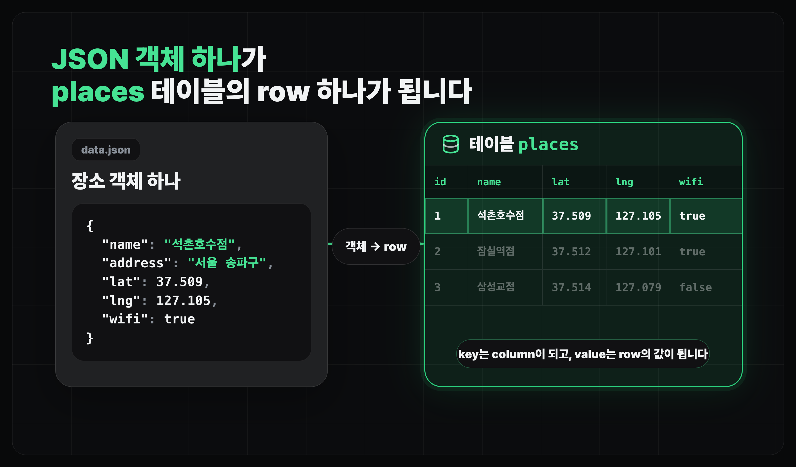

지도 데이터베이스 구축하기
데이터베이스 스키마 설계하기
cafes.json을 places 테이블 스키마로 옮기는 기준을 잡습니다.
얻어갈 것
cafes.json을 기준으로places테이블과 컬럼 후보를 잡습니다.- AI가 만든 스키마 초안에서 row, column, type 기준을 확인합니다.
데이터에서 스키마로
00-data-reading에서 본 장소 데이터는 아직 파일 안의 JSON입니다.- 데이터베이스에 넣으려면 "객체 하나"를 "테이블의 한 줄"로 바꿔서 생각해야 합니다.
- 느좋카페에서는 JSON 객체 하나가
places테이블의 한 줄이 됩니다.

Postgres와 관계형 데이터베이스
- 이번 프로젝트에서는 Supabase가 제공하는 Postgres를 사용합니다.
- 관계형 데이터베이스는 여러 테이블을 만들고, 필요한 테이블끼리
id로 연결합니다.
테이블, 컬럼, row
| 용어 | 의미 | 느좋카페 예시 |
|---|---|---|
| table(테이블) | 같은 종류의 데이터를 모아둔 표 | places |
| row(행) | 실제 데이터 한 줄 | 카페 한 곳 |
| column(열) | row가 가져야 할 항목 | name, lat, lng |
| type(타입) | column 값의 종류 | 글자, 숫자, 참/거짓, 시간 |
- 스키마를 볼 때는 column 이름보다 먼저 "row 하나가 무엇을 뜻하는지"를 확인하는 편이 좋습니다.
- 이 기준이 흐리면 나중에 권한과 조회가 꼬입니다.
places 스키마 설계하기
- 아직 로그인과 저장 기능을 붙이기 전이라, 이번 레슨에서는 장소 데이터만 데이터베이스로 옮깁니다.
cafes.json의 객체 하나가places테이블의 row 하나가 됩니다.- 사용자, 북마크 관련 테이블은 인증과 저장 기능을 붙일 때 다시 설계합니다.
유저스토리로 보기
- 사용자는 지도에서 작업하기 좋은 카페 목록을 봅니다.
- 사용자는 카페 이름, 주소, 위치, 영업시간, 작업 환경을 확인합니다.
- 운영자는 이 장소가 초기 데이터인지, 나중에 제보로 들어온 데이터인지 구분합니다.
places 스키마 설계 맡기기
P1느좋카페 스키마 초안 잡기
느좋카페 데이터베이스 스키마 초안을 잡아줘. 1. 기본 데이터는 data/cafes.json을 참고해. 2. Supabase/Postgres를 사용할 거야. 3. 이 장소 데이터는 나중에 제보를 통해서 넣을 수도 있어.
마무리
- 이번 레슨에서는
cafes.json을places테이블로 옮기는 기준만 잡습니다. 추후에 요구사항에 따라 테이블을 추가할 예정입니다.